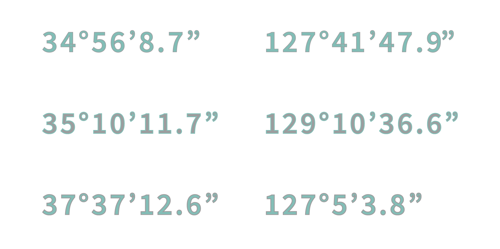
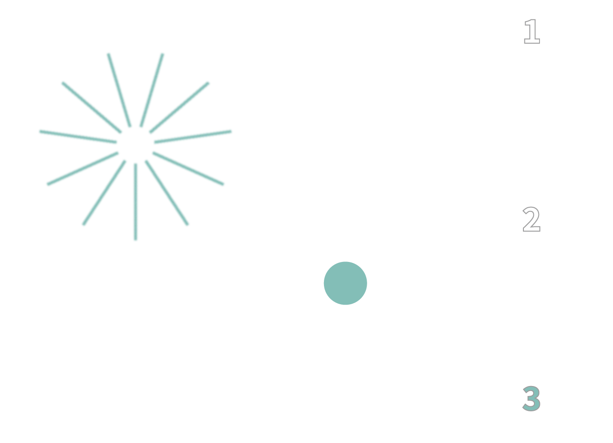
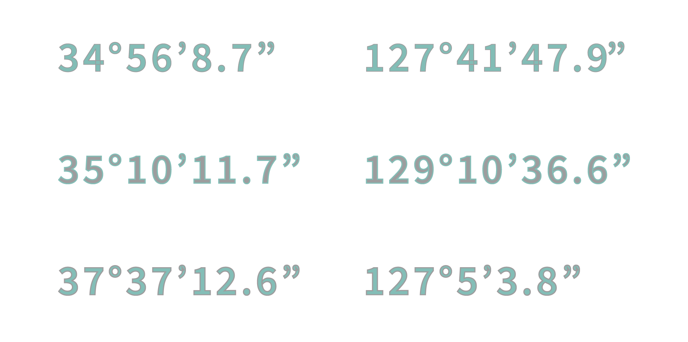
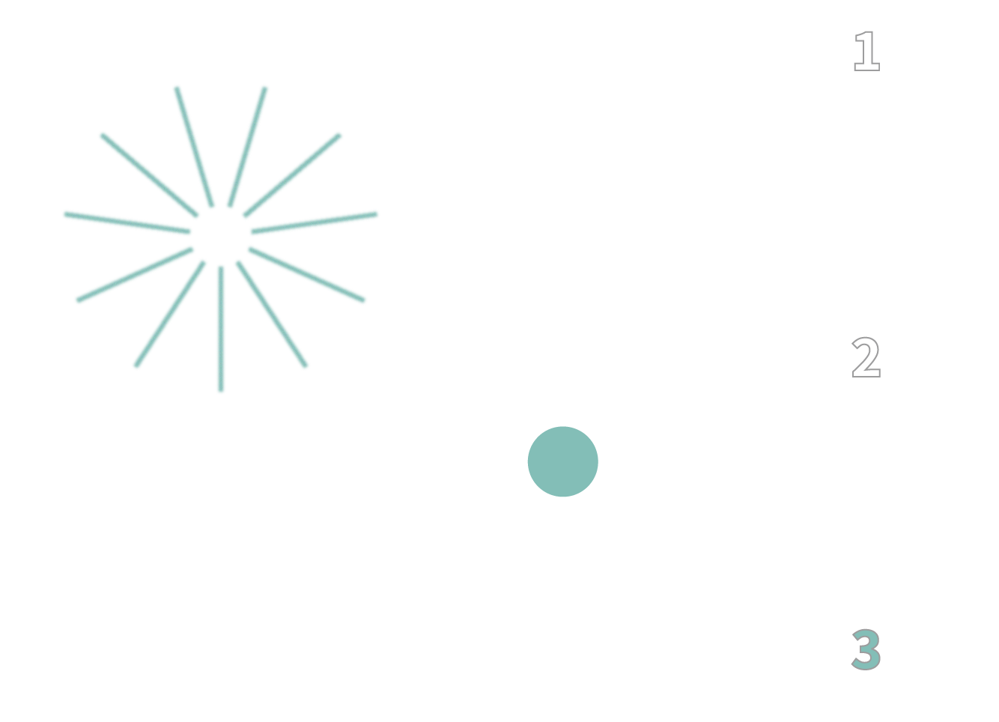

2024
[정류장 레터링 포스터]
2p, single sided printing
297 * 420 X 6
나를 이루고 기억해왔던 것들을 주제로 작업한 작업물입니다.
고등학교에 가기 위해 항상 버스를 기다렸던 동네 집 앞의 버스 정류장부터
잘해야겠다는 다짐을 가득 담아 매일 이른 아침 발걸음을 옮겼던 부산의 어느 종점역,
그리고 시간이 흘러 현재 서울의 6호선 지하철역까지.
지금의 내가 되기까지 수없이 오르내렸던 정류장과 역들을 레터링 후 포스터를 디자인했습니다.
우리는 어떤 기억으로 어디를 거쳐왔고 어디로 나아갈까요,
달콤쌉싸름한 추억을 떠올리게 하고 낭만적인 기대를 품을 수 있기를 바랍니다.


 



station route.｡ (ˆ. ̫ . ⸝⸝⸝ˆ) ໒꒱
latitude and longitude
used graphics*ˊᵕˋ
used pics